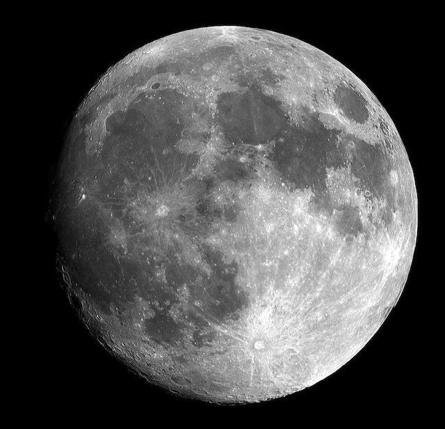

LA LUNA

MARTE

JUPITER

MERCURIO
Se encontro un planeta llamado Proxima b, ubicado en la zona habitable de la
estrella más
cercana a nuestro sistema solar, Próxima Centauri.
Proxima b es una super-Tierra y
orbita su
estrella a una distancia que podría
permitir la existencia de agua líquida en su superficie. Aunque Próxima Centauri
es una
enana roja muy
activa que emite llamaradas estelares, lo que podría hacer que la vida en Proxima
b sea
difícil, los
científicos creen que aún es un candidato prometedor para la colonización humana en el futuro.
Producida utilizando datos previamente publicados de tres telescopios muestra dos enormescavernas talladas por estrellas gigantes invisibles que pueden liberar hasta un millón de veces bmás luz que nuestro Sol
Las galaxias lenticulares no son galaxias espirales o galaxias elípticas. Se encuentran en algún punto intermedio, exhibiendo rasgos de ambos. Las galaxias lenticulares tienen una protuberancia central de estrellas apretadas y un disco delgado y circular de estrellas, gas y polvo, como las galaxias espirales, pero carecen de brazos.

El brillante resplandor de dos cuásares que residen en los núcleos de dos galaxias que están en el caótico proceso de fusión. El tira y afloja gravitacional entre las dos galaxias enciende una tormenta de fuego de nacimiento de estrellas.
Un agujero negro a la deriva a través de nuestra galaxia, la Vía Láctea. El agujero negro es el remanente aplastado de una estrella masiva que explotó como una supernova. El núcleo sobreviviente es varias veces la masa de nuestro Sol. El agujero negro atrapa la luz debido a su intenso campo gravitatorio.